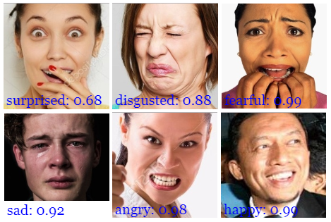

// Semester Two Week One: 10.01.22 - 14.01.22
Graduation Project:
// 10.01.22 - 01_draft_DesignBrief.
// 11.01.22 - Facial Expression Tracking Using P5.JS.
// 12.01.22-13.01.22 - Testing Of Facial Tracking During Cohort Briefing.
// 14.01.22 - Compilation Of Some Exhibitions I've Visited Over The Break That Have Inspired Me.
// 10.01.22 - 01_draft_DesignBrief.
Over the holidays I rewatched the film "Her" which featured the main character Theodore, falling in love with an artificial intelligence named Samantha who over time develops emotions which is basically affective computing in a nutshell.. Not sure why I did not think about this movie earlier when I was doing my research on the topic but I'm just glad somebody on instagram posted a scene from it which prompted my rewatch. But basically, there was this line in the film that kind of stuck with me and that was the first thing Samantha says to Theodore:
Hello, I'm Here."
- Samantha
Her (Film)
Gif: scene from "Her" when Samantha is booted up for the first time. Source: Https://gfycat.com/falsecheeryamazondolphin
Something about how that line was delivered in the film just stuck with me and I thought that it made a lot of sense as a title for my project. It also makes sense as the next step for my project where the next step after recognising your feelings is to seek support or to talk about it. The sentence carries this sense of presence/co-presences where it's kind of casual and comforting while still having a vulnerable tone.
The delivery of the sentence could mean a few different things. In one instance it could mean "Hello, I'm Here" in the sense where "Hello, I'm Here... are you free to talk?" in the other it could mean "Hello, I'm Here... do you need to speak to someone?" or "Hello, I'm Here... to support you". Depending on who is the one saying the line it could mean different things yet share a similar theme and tone.
Anyways on to the Design Brief (Draft Version 01 attached below), most of the content dealing with the context, objective and purpose were extracted from the dissertation rephrased to suit the design brief. What's newly introduced in my target audiences as well as the planned deliverables and timeline, all of which can be read (with their reasoning) in the draft below.
The project basically compromises of three parts, Affective Communication as my research topic and overall project, that compromises of "A Series of Explorations and Technical Challenges." which is a continuation of my deliverables from last semester where I further explore Affective Computing and also Arduino programming, while the new component introduced now is "Hello I'm Here".
To further elaborate on "Hello, I'm Here", it's basically the cumulation of my various explorations across all expects of my research into a "final" artefact that answers my proposed design statement. On to the design statement, it has been slightly tweaked from my dissertation statement to fit the tone of a design brief.
I feel like as though I've seen my share of design briefs while during school or working, I've never had the opportunity to actually write one myself and to be honest it's actually quite hard (no wonder clients always give such bad briefs hahaha). Although I had the bulk of the content written for dissertation, It was tricky knowing which parts had "value" and also piecing the pieces together for the brief to make sense.
Working out the deliverables was tough as as of now, I do not know how the project will turn out so I could only list the deliverables as "artefacts" however I know that I would like to approach the project with the idea of documenting the project in print and online so a publication and website were necessary deliverables alongside giving the project an identity. So that it's not just an exercise in computation but also a design deliverable. Also honestly, I think I just really miss working on books. So publishing the research in a book would give me an avenue to do that.
Timeline wise, I've tried to stagger the timeline in a way where it gives me time to figure out each "mini project" and as one project comes to a close another one begins allowing for some overlap between each one so as to keep my mind busy, cause usually when I work on something for too long I'd get kind of bored and start drifting, so this method keeps my brain busy and actively thinking about different things. I've also done my best to account for production times such as when books need to be send for print and when artefacts have to be produced so that there is ample time for documentation.
// End of this Section.
// 11.01.22 - Facial Expression Tracking Using P5.JS.
To be honest, I didn't get much work done over the break. Spent the first couple of weeks resting and recharging then the next few weeks I had to opportunity to work with Dhiya under Neuewave to develop and work on Andreas's latest "The Oort Cloud and Blue Mountain" iteration commissioned by Singapore Art Museum for Singapore Art Week 2022. Which I felt like was a really good experience for me as I worked on appropriating the design, project and budget management but the most fun part of it was working on the electronic components wiring up dozens of lights to an Arduino board, learning about how to cable manage and keep the components displayed neatly as well as just really developing my "craft" soldering, wire stripping and putting together circuits at a larger scale than what I've been exploring with.
But enough of that, back to the work on hand. So for this week I took the first step towards some of the practice based explorations that I would like to explore for my dissertation discussion. This first exploration would be using face-api with ml5.js and p5.js to create a facial expression tracker. Facial expressions are a integral part of communicating emotions. So the first part of my dissertation would be dedicated to different open source ways of using affective computing to "attempt" to read my facial expression to tell how I'm feeling.
p5.js Sketch: Facial Expression Tracker using ml5.js, p5.js and faceAPI. (Refresh the page and allow camera if you have not allowed it to try.)
For this first implementation of the idea it's using open source code shared by Kazuki Umeda, Real time face detection for p5.js coders. It was fairly straightforward to understand as he kept it easy without diving too much into the machine learning of it all, just the p5.js implementation.
The idea of using face-api and ml5.js is inline with direction I have set for the dissertation which is using what is available open sourced online without having to have specialised knowledge in the field.
First thing I noticed about it was that the neutral and happy face was very accurate and the harder faces to detect were disgusted, surprised and fear. Also mainly because I don't really know what those faces were, in a sense. So i had to refer to the documentation for some help.
#https://github.com/justadudewhohacks#https://justadudewhohacks.github.io/face-api.js/docs/index.html#models-face-expression-recognition This face-api was built byVincent Mühler and was based on the 6 basic emotions theory by Paul Eckman. So Mühler had a guide for how each emotion should look like on his documentation website.
// End of this Section.
Image: Facial Expressions for face-api.
Source: justadudewhohacks.github.io/face-api.js/docs/index.html#models-face-expression-recognition.
// 12.01.22 - Testing Of Facial Tracking During Cohort Briefing.
With the first version of the Facial Expression Tracker ready I decided to test it out during the first cohort briefing session over zoom. As the tracker was a p5.js sketch, there was no way to implement it in zoom directly so I found a Coding Train tutorial for using p5.js to make Zoom Visual Annotations. Shiffman uses Open Broadcaster Software Studio (OBS Studio) to capture the p5.js sketch as a virtual webcam, and then using that virtual webcam to stream to Zoom.
This might not be "easiest" process but it seemed the most straightforward and manageable one for the time being. So right off the bat, the first issues I realised was that i have not tested this in an multi-people environment, it's most been me just testing it myself and also I only ran one test of it on zoom in a private call with one other person just to make sure OBS was working.
Image: Testing Face-Api sketch in a private zoom call through OBS Virtual Camera.
While in a private zoom setting, the system seems to work well enough when the zoom window was open or with the OBS window open. However I did realise that it got pretty laggy at times.
Image: Image: Testing Face-Api sketch in a large multi-participant scenario through OBS Virtual Camera.
So using this tracker for the first time in a real life setting actually did make me feel quite hyperaware. Also the whole design of it was just quite messy, the colour and positioning of the text, the size of the tracker on the face, there's just a lot more to be considered and that can be changed moving forward. Also I got a couple of texts asking whats that on my face but most people could not see it clearly so that was also a downside of it.
I visited a couple of exhibitions at the Art Science Museum namely Future World: Where Arts Meets Science by teamLab, Orchestral Manoeuvres: See Sound. Feel Sound. Be Sound, Virtual Realms: Videogames Transformed and The Future is Now by Nam June Paik. Just the experience of visiting these exhibitions back to back got me feeling really inspired and refreshed especially coming off working with Dhiya on an installation by Andreas for Singapore Art Week. While working on an installation gave me some confidence and technical know how, visiting these exhibitions made me really appreciate the detail and technical skills that goes into making them possible. On top of that, just observing how people interacted with the exhibitions and looking into the finer details started to give me some ideas for the semester ahead.
Future World: Where Arts Meets Science by teamLab.
I know I'm probably late to the game when it comes to this exhibition as it's been around for three years, but I'm actually glad that I visited it later than sooner. Especially now when I'm really into this creative technology discipline, it allowed me to opportunity to look at it from a different lens, a more critical one even. Cause all these while when I've seen other people's instagram stories or videos of the exhibition I've always just thought of it as something that just looks good and that's about it. But now visiting it for myself it's really interesting how each installation or section flows to the next and also just what goes into making it possible.
Something interesting from the first section of the exhibition City in A Garden, especially for Transcending Boundaries and Proliferating Immense Life - A Whole Year per Year was that my experience with most of the artworks really got me to slow down, usually I move at a really quick pace and when I did that the interactions either did not happen or were really subtle but when I slowed down and really just take a moment, things started to happen. I'm not too sure if it was intentionally designed that way or was it a limitation of the technology (although I really doubt this one), it just got me thinking about how certain interactions could have an effect on the natural "state"(?) of a person. How would these interactions occur if the person was naturally slow, would they have tried quickening their pace to see what happens? Would they remain the same pace throughout cause the interaction was happening?
In the second section Sanctuary, The Way of Birds, this was probably my favourite artwork in the whole exhibition, it was super immersive with the screen stretched all around you and the graphics of the birds created this really generative feel where everything felt really random but also considered. Like it was programmed to just feel kind of natural but also not really at times really adding to the overall immersive experience. It also felt really calm in there, I spent a good 20 minutes just standing and sitting in different positions and locations just to catch a break but also to see how things started moving around.
The third section Park, was to be honest the most dull one for me which really contradicts what it's supposed to be, like it's supposed to encourage play but I'm not sure if I was just really tired at that point or it was a slow weekday afternoon and I was alone, I just really couldn't get into the mood of things. Although they do really looked fun and I can really appreciate the details they placed in the interactions to encourage play, I mainly just tried it out for a minute and moved on. It just didn't quite get my hooked onto things unlike other artworks that I tried. Although I did see something really interesting at Light Ball Orchestra, I got there while they were changing the batteries of the ball and it was actually kind of cool to see that the battery pack as well as part of the lights were actually just packed in like a Tupperware box and tucked into the ball. There probably is a bunch of other tech already packed into the balls, but just seeing this one part "vulnerable?" or rather exposed was really quite cool. You'd think that for an exhibition like this, everything would look prim and proper and really over designed to give the impression that things looked good but just seeing a Tupperware container being stuffed into the ball, that's not what I would have expected. So I guess the age old adage of "if it works", it works really came into play here.
The last section Space, Crystal Universe was another one that I really enjoyed. Although on the surface it felt kind of simple, I read up on it and basically it just using sensors measuring your mass and motion and those inputs would affect the light behaviour of the LEDs in the space. It's a simple idea that works. Also it's really quite impressive having 170,000 LEDs in one space and programming that, that's crazy. One weird, ok not really weird but interesting thing is that the walkway was pretty narrow, but at the same time, maybe it's manipulation of the lights in the space that helps ease the feeling of cramp-ness. But that's just an interesting thought into spacial manipulation through the use of lighting conditions.
Virtual Realms: Videogames Transformed.
Virtual Realms was a really really enjoyable exhibition, like for reals not in the pretentious way. It's a really new and "fresh?" take on like game interaction but also many of the properties of the game interaction could also be used in other contexts. I didn't really know what to expect going into this as it wasn't too popular and I haven't seen it on social media but I think it was good to go in without expectations cause it just blew me away.
The first realm was SYNESTHESIA, Rezonance created by game designers Enhance and media designers Rhizomatiks. And can I say I just love love love this. Not just because I'm a fan of Rhizomatiks but just the experience as a whole was great. Initially I was put off by this realm as it required a minimum of two participants, up to four, and well I went there alone. So I just hung around the side watching people play the game and thought actually it wasn't anything much, "oh cool they hold the ball and move around then lights, sounds and graphics go off, oooo game" haha. But I decided what the heck and just tried it myself, as there wasn't any other solo groups, the usher actually had to join the game as well just to get things to work as intended, that was a little embarrassing and I felt bad for imposing on him but oh well. Ok so what I had thought was just "meh" about it like moving the ball around to trigger the graphics, lights and sound, was actually really something else when I experienced it myself. There were subtle details in the interaction that you would not have noticed if you were just watching from the side. The way the orb felt in your hands, it was 3d printed but they passed me two different ones and although they looked the same they felt different due to the texture. The slight vibrations in the orbs that happened together with the other outputs. The way it all came together really added to the overall experience. Together with the dark space and choice of graphics, it created an immersive atmosphere that when all things considered made you feel like you were in a game but also not really but also like who need VR amirite? Hahaha. But as in line with the title Synesthesia, and although I did not know the other participant in the experience with me, the whole thing created this sense of like a shared experience as we were contained in that space through the lights. sound and graphics. I'm not quite sure how to explain it, but it was just like a sense of co-presence where I was experiencing something on my own but also with someone else. The ushers also shared with me that the orbs actually break really often and that they had their own tech team on site to 3D print new casings each time it happens.
The second realm, Unity, Together: the distance between (us), was unique in a sense, but I can't reflect too much upon this experience as I feel like I did not get the full experience as I was alone. Although for a brief period of time another group of people came into the space and I was able to get a "fuller" experience but it was interesting how generative the behaviour of the light was. The movement of the lights felt like it was mixing me into the space with the other people, like we were all in this giant blender and things were spinning around. Making the space and distance between participants feel larger at times and smaller at times, letting the light shape the space.
The second realm, Unity, Together: the distance between (us), was unique in a sense, but I can't reflect too much upon this experience as I feel like I did not get the full experience as I was alone. Although for a brief period of time another group of people came into the space and I was able to get a "fuller" experience but it was interesting how generative the behaviour of the light was. The movement of the lights felt like it was mixing me into the space with the other people, like we were all in this giant blender and things were spinning around. Making the space and distance between participants feel larger at times and smaller at times, letting the light shape the space.
The fourth realm Play, Dream Shaping, was actually more interesting and "useful" to me as I watched how people interacted with it. As it occurs in a 3D Space, I observed four groups of people ahead of me play the game and they all did the same thing they faced the screen at first but then start to turn around in different directions and then run towards those spaces. Which makes sense, yes, it is a 3D Space experience and that's probably what's encourage and what it was designed to make you do. But in my head I just kept thinking, what if I just stayed somewhere in the middle and then used the object to interact in the 3D Space (sort of like how your head stays still but then spatial audio forms the 3D space around you), put it over my head to reach the back, extend to the sides to play the game. That's also utilising the 3D Space right? So I tried that out and it kind of worked although I didn't get too high a score (I think, the ushers didn't look amused haha), maybe it might be better to just play the game and interact as intended.
For the last two realms, Narrative and Everything, I didn't managed to get the full experience as it was pretty late in the day and no one else joined the experience. So I'll just skip past that.
Orchestral Manoeuvres: See Sound. Feel Sound. Be Sound
Ok this exhibition was just pretty cool on it's own and there were so many cool things like artwork from Carsten Nicolai and Yoko Ono as well as some cool videos and also the prints of like lyrical notations but like graphics as alternative forms of musical score readings, all really really interesting to me but two pieces stood out the most, Rage Fluids by Hannah Perry and The Forty Part Motet (A reworking of “Spem in Alium, by Janet Cardiff.
In the first section of the exhibition titled Resonance, Rage Fluids by Hannah Perry was such an impressive way to start of the exhibition, it provided such a unique, immersive-almost way to experience sound. The scale of the sculptural form taking up most of the room and the movement of the chrome foil, to me visually symbolised the feeling of like your skin tingling when you're listening to a really good song (anyone else feel that or is it just me, do I have to see a doctor?). It was just such a unique experience to me.
In the seventh section of the exhibition titled Choral, The Forty Part Motet (A reworking of “Spem in Alium, by Janet Cardiff had a similar effect with the speakers placed all around you, it took surround sound to another level. As the piece didn't split the sound like traditional surround sound, each speaker represented one part of the orchestra and it made me feel like I was right in the thick of things creating a new "sense" of immersive-ness. Not to be pretentious or anything but it just made me feel things even though I did not know what choir was singing just being in the space made me tear up a little, not gonna lie. It just wasn't the "traditional" immersive experience I expected from the photo. The small details of being able to listen to each person in the choir, amazing.
// End of this Section.
// End of this Section.
// End of the Week